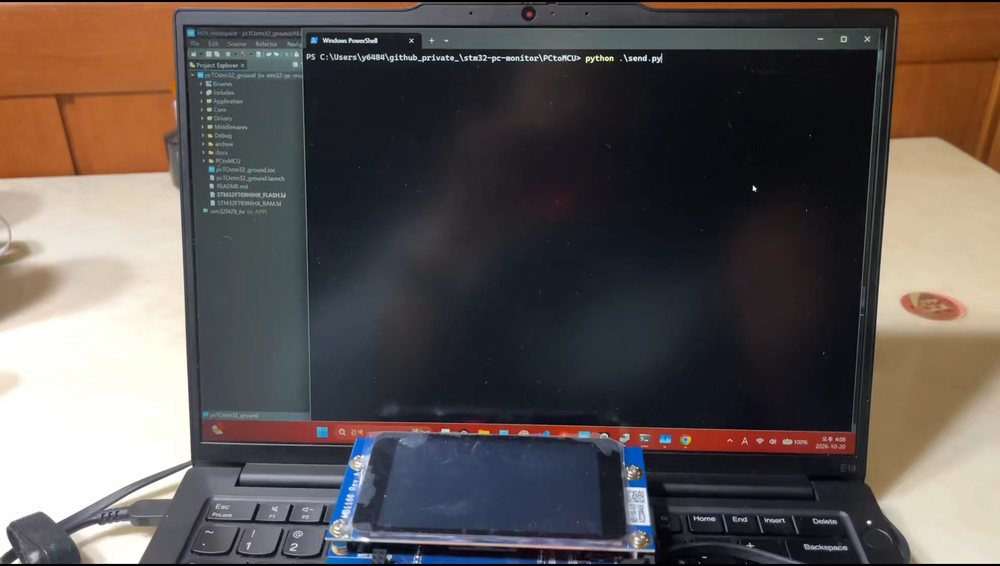
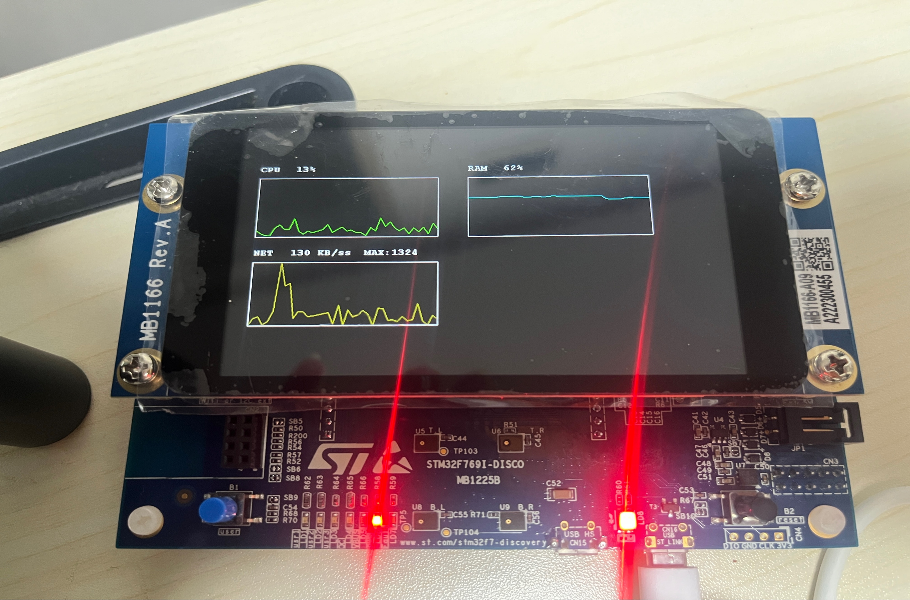

01 · PERSONAL PROJECT
STM32 PC Monitor
PC 자원 정보를 UART로 전달하고 STM32 LCD에 실시간 그래프로 시각화한 임베디드 시스템
- 문제
- 전체 화면 작업 중 시스템 상태를 계속 확인하기 어려움
- 역할
- PC 측정부터 MCU 수신과 LCD 출력까지 개인 구현
- 결과
- 최근 100개 샘플을 고정 메모리로 관리하고 실제 보드 출력 확인
EMBEDDED SOFTWARE DEVELOPER
STM32 펌웨어와 임베디드 Linux 환경에서 통신, RTOS, 보드 초기화와 시스템 디버깅을 경험한 신입 개발자 김하영입니다.

SELECTED WORK
무엇을 만들었는지보다 발견한 문제와 판단, 구현 결과를 중심으로 정리했습니다.

01 · PERSONAL PROJECT
PC 자원 정보를 UART로 전달하고 STM32 LCD에 실시간 그래프로 시각화한 임베디드 시스템
02 · PERSONAL PROJECT
USB CDC, DMA 기반 UART와 내부 Flash 드라이버를 구현하며 통신과 메모리 제어의 기반을 다졌습니다.
상세 페이지 준비 중03 · DEBUGGING
로그와 프로세스 상태를 분석해 임베디드 Linux 시스템의 메모리 압박을 주요 원인으로 좁히고 변경 전후 상태를 비교했습니다.
상세 페이지 준비 중04 · TEAM PROJECT
객체 추적 데이터의 흐름을 분석하고 차량 중복 집계와 누락을 줄이기 위한 개선 방향을 도출했습니다.
상세 페이지 준비 중TECHNICAL CAPABILITIES
STM32 HAL 기반 주변장치 제어, 내부 Flash 읽기·쓰기, 인터럽트와 DMA를 이용한 데이터 처리
Educational FirmwareUART와 USB CDC 통신, 프레임 경계가 있는 텍스트 프로토콜, 원형 버퍼 기반 수신 구조
PC MonitorFreeRTOS 태스크 시그널링과 ISR 책임 분리, 데이터 소유권과 UI 태스크 분리 개선안
PC MonitorSerial·Kernel Log와 시스템 자원을 함께 관찰하고 가설을 세운 뒤 동일 조건에서 변경 전후 상태 비교
System-level DebuggingDEVELOPMENT JOURNEY
통신과 비휘발성 메모리 제어를 직접 구현하며 펌웨어의 기초 동작을 학습했습니다.
PC와 MCU를 연결하고 수집, 전송, 파싱, 저장, 시각화까지 하나의 흐름으로 구성했습니다.
팀 프로젝트에서 기존 영상 처리 파이프라인을 읽고 객체 추적 상태와 카운팅 문제를 분석했습니다.
임베디드 Linux 시스템의 로그와 자원 상태를 근거로 장애 원인을 좁히고 개선 전후를 비교했습니다.
ABOUT
기능 구현에 그치지 않고 함수 호출과 데이터 흐름을 따라가며 시스템이 동작하는 이유를 이해하려고 합니다. 문서와 소스 코드를 직접 확인하고, 오류를 재현 가능한 단위로 나누어 원인을 좁혀가는 개발자가 되고자 합니다.
EMBEDDED SOFTWARE DEVELOPER
데이터의 흐름을 따라가며
시스템이 동작하는 이유를 이해합니다
STM32 펌웨어와 임베디드 Linux 환경에서 통신, RTOS, 보드 초기화와 시스템 문제를 분석해온 신입 개발자입니다.
system_trace.logCPU · RAM · NETframe → buffer → eventISR → task → stateobserve → isolate → validateTRACE COMPLETE
HOW I WORK
함수 호출과 데이터 흐름을 직접 따라가고 문서와 소스 코드를 대조합니다. 문제를 재현 가능한 단위로 나누고, 관찰한 근거를 바탕으로 가설을 세운 뒤 결과를 다시 확인합니다.